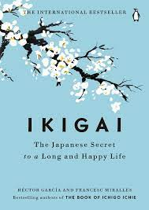

4
IKIGAI: THE JAPANESE SECRET TO A LONG AND A HAPPY LIFE
- What you love (your passion)
- This refers to activities, hobbies, or pursuits that bring you joy and fulfillment.
- It could be anything frompainting to gardening to playing music.
- What you are good at (your vocation)
- This involves recognizing yout strengths, skills, and talents.
- It's about undesrtanding what you excel at and what comes naturally to you.
- What the world needs (your mission)
- This aspect emphasizes contributing to the greater good, making a positive impact, or serving others in some capacity.
- It involves identifying needs or problems in the world that resonate with you and finding ways to address them.
- What you can be paid for (your profession)
- This relates to finding a career or vocation that allows you to earn a living while also aligning with your passin, strengths, and values.